데이터 기준 2026년 9월 25일(금) 미국 장 마감 · 출처: 직접 만든 두 사이트 (금리와 주가 50년 · 테마 강도). 굵은 노란 글씨는 힘줘서 읽을 숫자, / 표시는 잠깐 쉬는 곳이에요. 촬영할 때는 위의 읽기 모드를 켜면 이미지와 편집 메모가 숨고 글자가 커져요.
강조해서 읽기상승·좋음하락·나쁨연출(읽지 않음)
장면 1
오프닝 훅
0:00–0:30
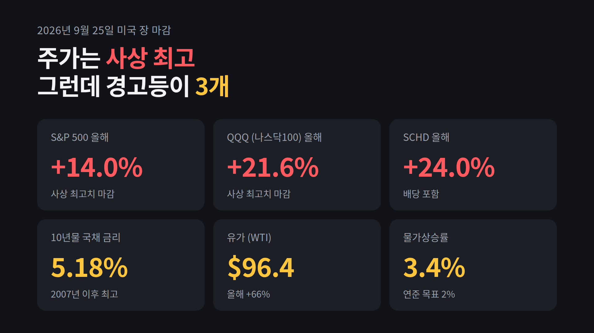
card-01-hook.png
카메라 정면, 첫 문장은 바로 치고 들어가기.
미국 주식, 지금 사상 최고치입니다.
S&P 500은 올해 14%, 나스닥 100은 22% 올랐어요.
그런데 같은 날 / 미국 10년물 국채 금리는 2007년 이후 가장 높은 5.18%를 찍었습니다.
유가는 연초보다 66% 비싸고, 물가는 3.4%에서 안 내려오고 있어요.
주가는 축제인데, 경고등은 세 개가 켜져 있는 거죠.
오늘은 50년 치 데이터로 / 지금 시장이 어떤 상태인지, / 그래서 지금 뭘 사는 게 좋은지 숫자로 정리해 보겠습니다.
편집 · 첫 3초에 card-01 풀화면 → 인물로 복귀. "14%", "22%", "5.18%", "66%" 숫자 자막 팝업. 배경음은 긴장감 있는 비트로 시작.
장면 2
인사 · 데이터 출처
0:30–0:50
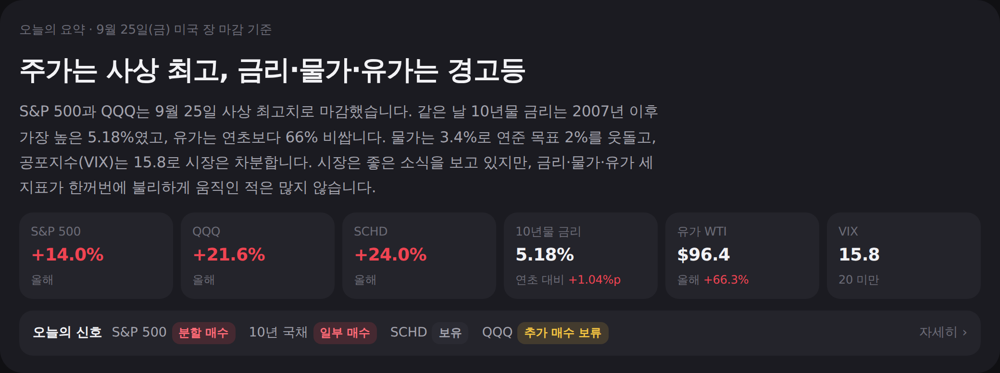
site-01-today.png
안녕하세요, (채널명)입니다.
오늘 보여드릴 숫자는 제가 직접 만든 사이트에서 가져왔어요.
1976년부터 지금까지 미국 주식, 금리, 물가, 유가를 한 화면에 겹쳐 보고 / 매일 자동으로 업데이트되는 사이트입니다.
기준은 9월 25일 금요일 미국 장 마감이에요.
편집 · site-01 화면을 천천히 위→아래 스크롤하는 느낌으로 켄번스. 하단에 사이트 주소 자막: tjguswns6891-blip.github.io/test1/invest
장면 3
경고등 ① 금리
0:50–2:00
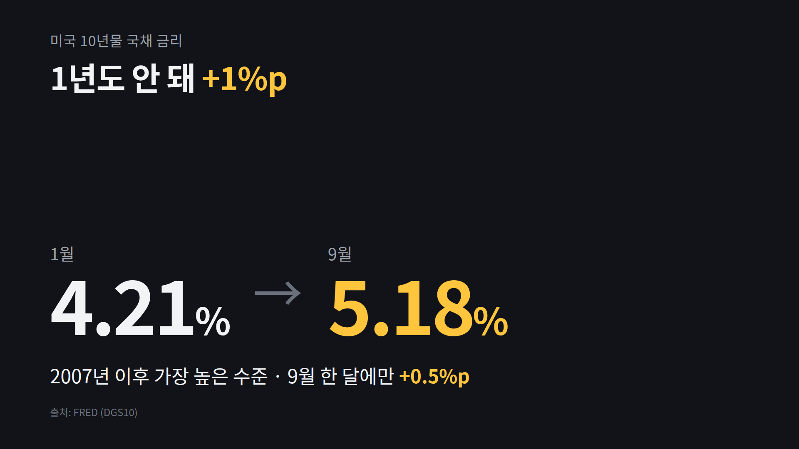
card-02-rate.png
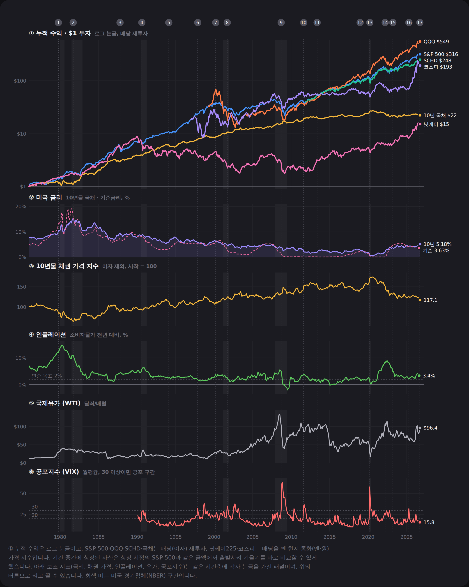
site-05-chart-50y.png
첫 번째 경고등, 금리입니다.
미국 10년물 국채 금리가 1월 4.21%에서 지금 5.18%.
1년도 안 돼서 거의 1%포인트가 올랐어요. 특히 9월 한 달에만 0.5%포인트가 뛰었습니다.
금리가 왜 중요하냐면요, / 국채만 사도 연 5% 넘게 주는데 / 굳이 위험한 주식을 비싸게 살 이유가 줄어들거든요.
그래서 금리가 오르면 주식, 특히 성장주가 눌립니다.
50년 차트로 보면, / 1981년 15%대에서 2020년 0.6%까지 40년 동안 내려오던 금리가 / 다시 올라와서 지금은 2007년 이후 최고 수준이에요.
편집 · card-02 → site-05의 ② 미국 금리 패널로 줌인, 오른쪽 끝 5.18% 지점 강조 원. 1981년 정점과 2020년 바닥에 화살표.
장면 4
경고등 ②③ 유가와 물가
2:00–3:00
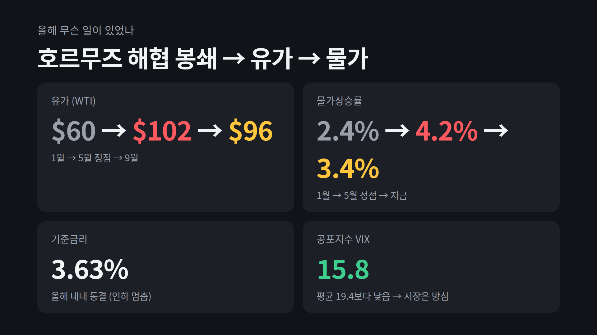
card-03-oil-cpi.png
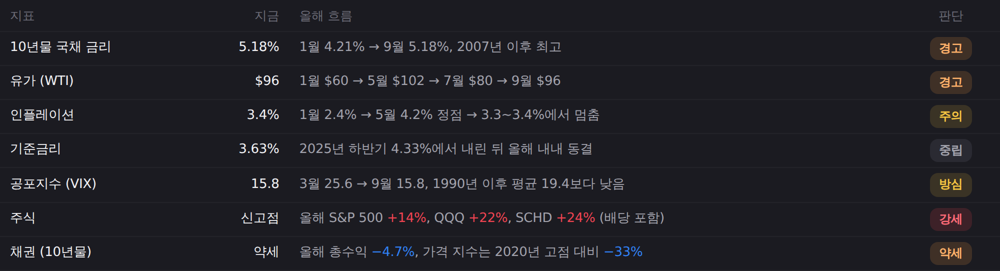
site-07-indicators-table.png
두 번째, 세 번째 경고등은 유가와 물가예요. 이 둘은 한 세트입니다.
올해 3월 호르무즈 해협이 막히면서 / 유가가 두 달 만에 60달러에서 102달러까지 뛰었어요.
그러자 물가도 1월 2.4%에서 5월 4.2%까지 올랐고요.
연준은 작년 하반기부터 하던 금리 인하를 멈췄습니다. 기준금리 3.63%에서 올해 내내 동결이에요.
여름에 물가가 좀 내려오나 싶었는데, / 9월에 유가가 다시 96달러로 오르면서 / 시장이 "금리가 오래 높게 가겠구나" 하고 받아들인 거죠.
그런데 재밌는 건, 공포지수 VIX는 15.8. 평균인 19.4보다 낮아요.
경고등은 켜졌는데 시장은 아직 차분하다. 이게 지금 상황입니다.
편집 · "호르무즈 해협" 나올 때 지도 B롤(자료화면) 권장. 유가 $60→$102→$96 숫자 애니메이션. site-07 표는 "판단" 열(경고/주의/방심)을 하이라이트.
장면 5
채권은 더 이상 방패가 아니다
3:00–3:50
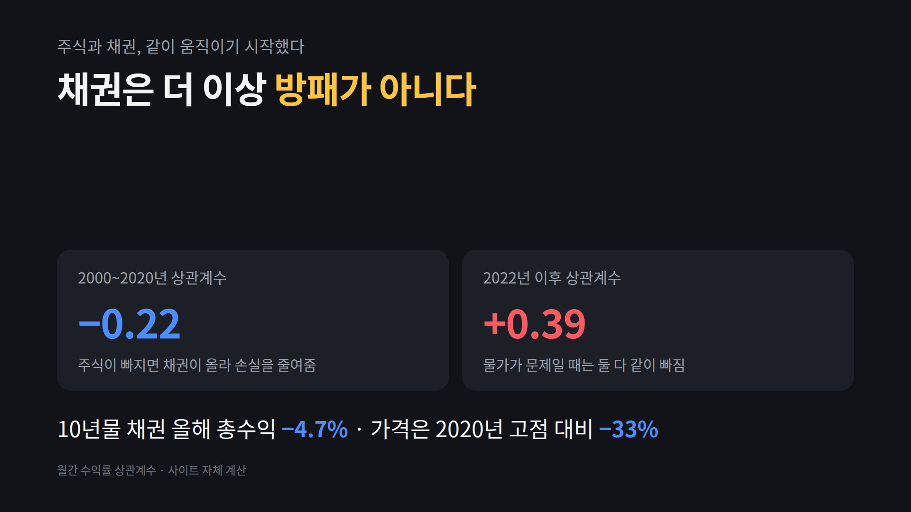
card-04-bond-corr.png
여기서 많이들 이렇게 생각하세요. / "주식이 불안하면 채권 사면 되지 않나?"
예전엔 맞았어요. 2000년부터 2020년까지는 주식이 빠질 때 채권이 올라서 손실을 줄여줬습니다.
그런데 2022년 이후로는 주식과 채권이 같이 움직여요.
물가가 문제일 때는 금리가 오르면서 주식과 채권을 동시에 누르거든요.
실제로 10년물 채권은 올해 마이너스 4.7%, 2020년 고점 대비로는 가격이 33% 빠져 있어요.
그래서 지금 채권은 '방패'라기보다 '연 5% 이자 받는 상품'으로 보는 게 맞습니다.
편집 · 상관계수 −0.22 → +0.39는 자막으로만 보여주기(말로는 생략). 방패 아이콘이 깨지는 모션 그래픽 있으면 좋음.
장면 6
과거에 비슷했던 때
3:50–5:10
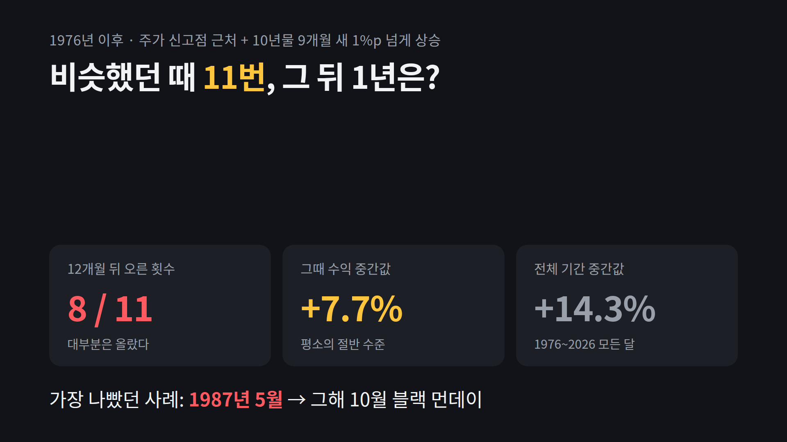
card-05-history.png
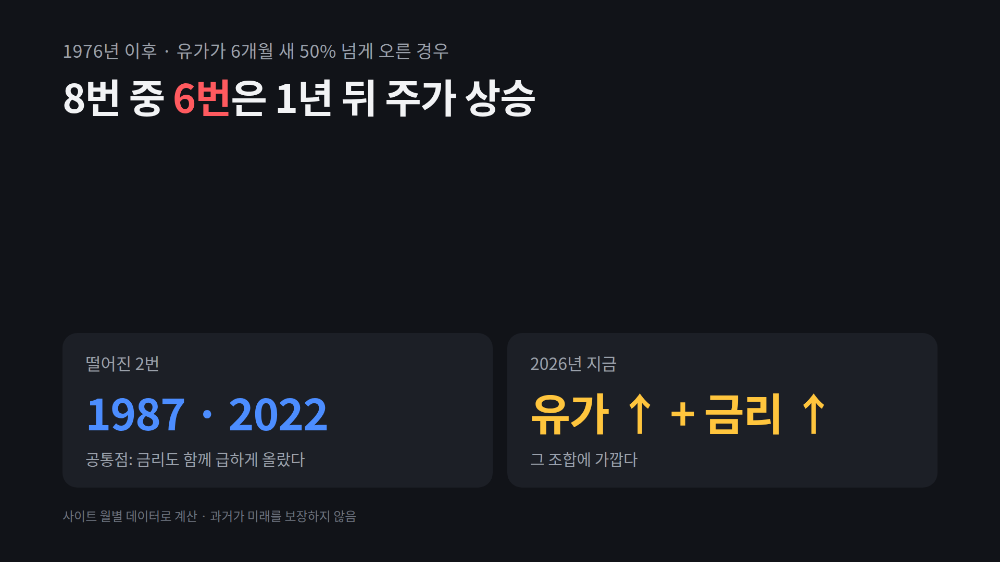
card-06-oil-history.png
그럼 과거에 지금이랑 비슷했던 때는 어떻게 됐을까요?
1976년 이후로, / 주가가 사상 최고치 근처인데 10년물 금리가 9개월 사이에 1%포인트 넘게 오른 경우. / 딱 11번 있었습니다.
그 뒤 1년, 11번 중 8번은 주가가 올랐어요. 생각보다 괜찮죠?
그런데 수익률 중간값이 7.7%. / 평소 중간값 14.3%의 절반입니다.
오르긴 하는데, 덜 오른다는 거예요.
그리고 가장 나빴던 때가 1987년 5월. / 그해 10월이 블랙 먼데이였습니다.
유가도 볼게요. 유가가 6개월 만에 50% 넘게 오른 경우, 8번 중 6번은 1년 뒤 주가가 올랐어요.
떨어진 두 번이 1987년과 2022년인데, 공통점이 있습니다. /금리도 같이 급하게 올랐다는 거예요.
유가 급등에 금리 급등. / 올해가 바로 그 조합에 가깝습니다.
편집 · "8번" "7.7%" "절반"에서 효과음. 1987 블랙먼데이·2022년은 뉴스 자료화면 B롤. 마지막 문장 뒤 1초 정적.
장면 7
그래서, 지금 뭘 살까
5:10–7:00
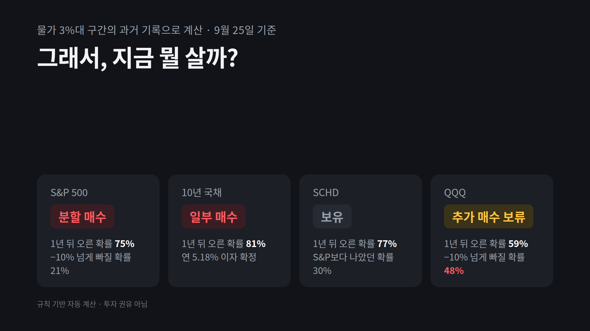
card-07-signals.png
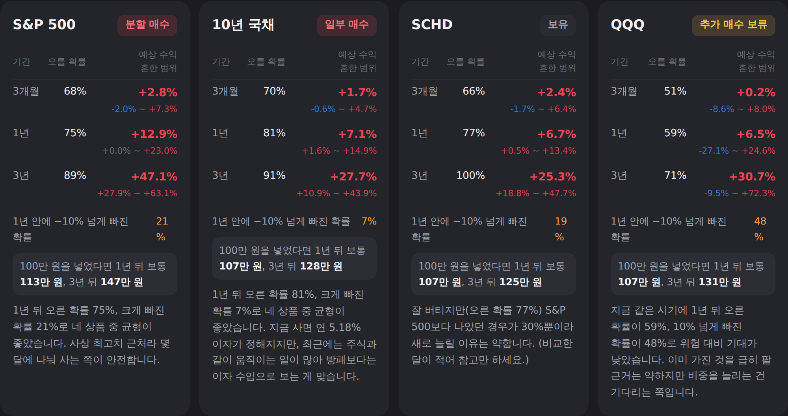
site-03-signals.png
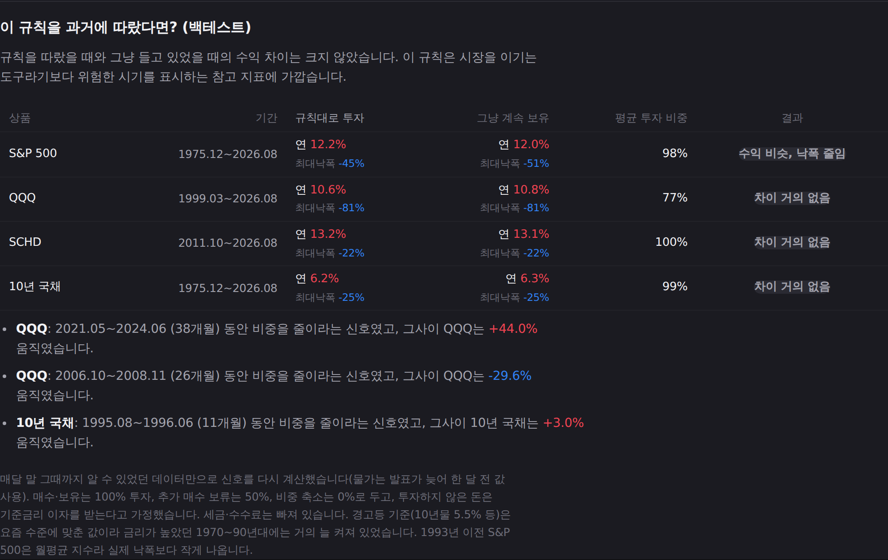
site-04-backtest.png
여기가 영상의 핵심. 속도를 조금 늦추고 상품 이름마다 끊어 읽기.
자, 그래서 지금 뭘 사면 좋을까.
제 사이트는 감으로 말하지 않고 규칙으로 계산합니다. / 1976년 이후 지금처럼 물가가 3%대였던 달에 샀다면 그 뒤 어떻게 됐는지를 보고, / 경고등 개수로 한 번 더 보정해요.
결과는 이렇습니다.
첫째, S&P 500은 분할 매수. / 1년 뒤 오른 확률 75%, 10% 넘게 빠진 확률 21%. / 100만 원 넣었다면 1년 뒤 보통 113만 원이었어요. / 다만 지금 사상 최고치 근처라 한 번에 말고 몇 달에 나눠서.
둘째, 10년 국채는 일부 매수. / 1년 뒤 오른 확률 81%, 크게 빠진 확률은 7%. / 지금 사면 연 5.18%를 확정할 수 있어요. 아까 말씀드렸듯이 방패가 아니라 이자 수입으로 보시고요.
셋째, SCHD는 보유. / 오른 확률 77%로 잘 버티는데, S&P 500보다 나았던 경우가 30%뿐이에요. / 가지고 계시면 들고 가되, 새로 늘릴 이유는 약합니다.
넷째, QQQ는 추가 매수 보류. / 이게 오늘 가장 중요한 숫자인데요.
지금 같은 시기에 1년 뒤 오른 확률 59%, / 그런데 10% 넘게 빠진 확률이 48%. 거의 반반이에요.
금리에 가장 민감한 게 성장주라서 그렇습니다. 닷컴 때 −81%, 2022년에 −33%였죠.
가진 걸 급하게 팔 이유는 없지만, 지금 더 사는 건 기다리자는 신호입니다.
솔직하게 말씀드리면, / 이 규칙을 지난 50년에 그대로 적용해 봤더니 그냥 들고 있는 것과 수익은 비슷했어요. S&P 500 기준 연 12.2% 대 12.0%.
대신 최대 낙폭이 −51%에서 −45%로 줄었습니다.
그러니까 이건 시장을 이기는 비법이 아니라, 위험한 시기를 알려주는 신호등 정도로 보시면 됩니다.
편집 · card-07을 기본 화면으로 두고, 상품을 말할 때마다 해당 카드만 밝게(나머지 어둡게). QQQ "48%"는 빨간 테두리 강조. 백테스트 문단에서 site-04 표로 전환하고 S&P 500 행 하이라이트. 하단 고정 자막: "투자 권유 아님 · 과거 데이터 기반".
장면 8
지금 강한 테마, 약한 테마
7:00–8:50
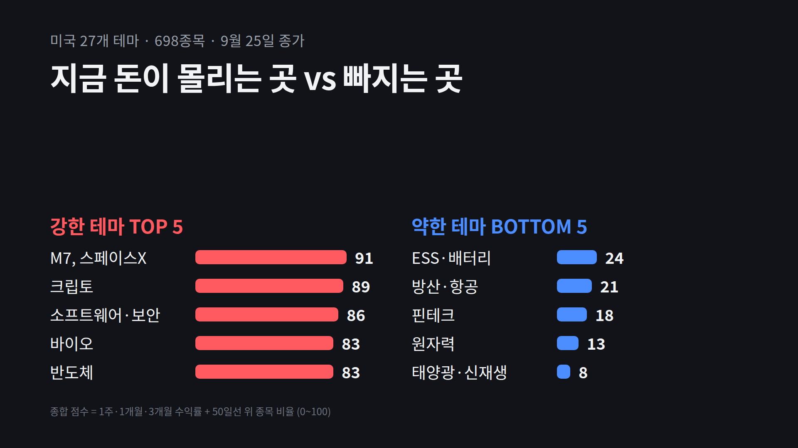
card-08-themes.png
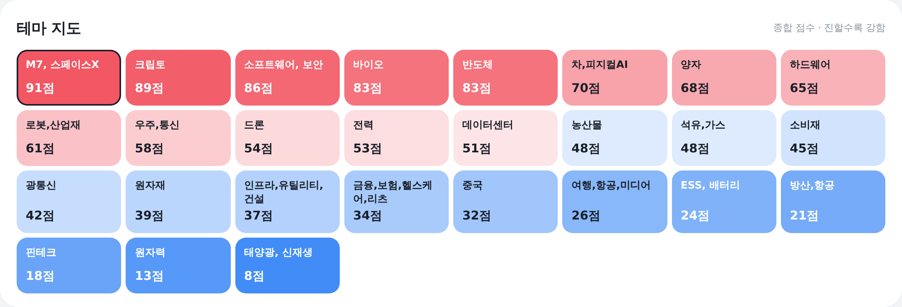
site-11-themes-map.png
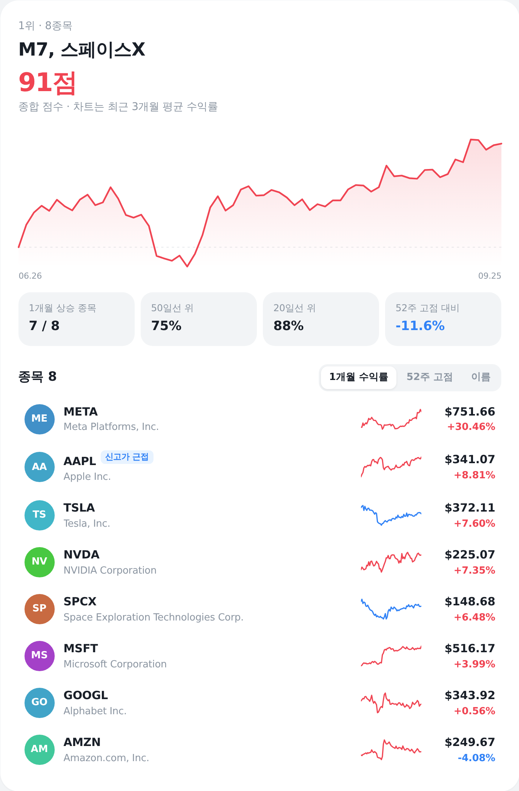
site-13-theme-m7.png
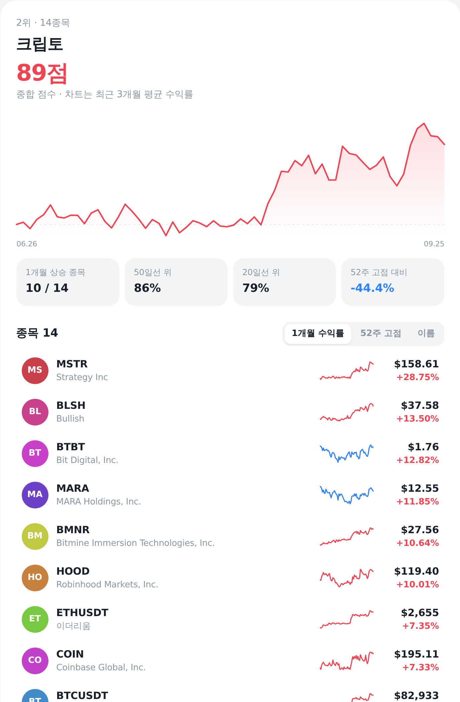
site-16-theme-crypto.png
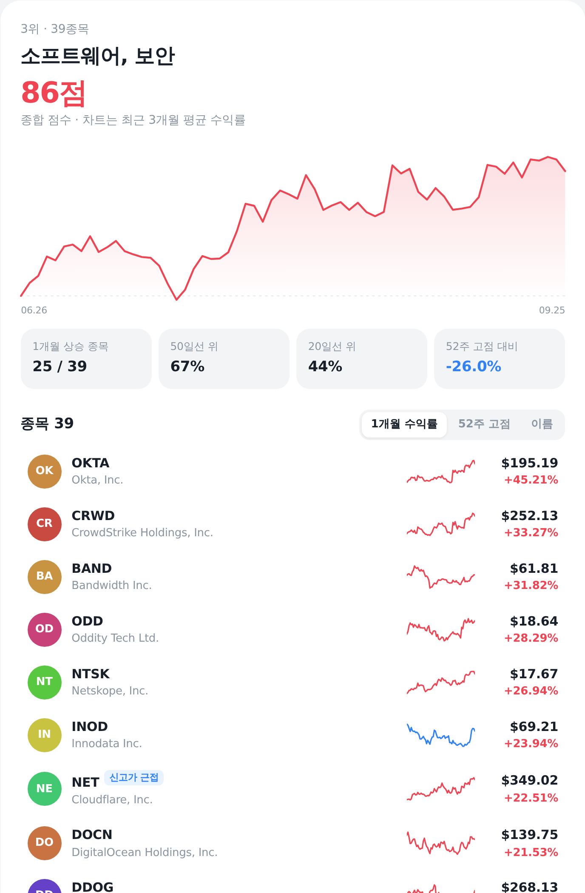
site-15-theme-software.png
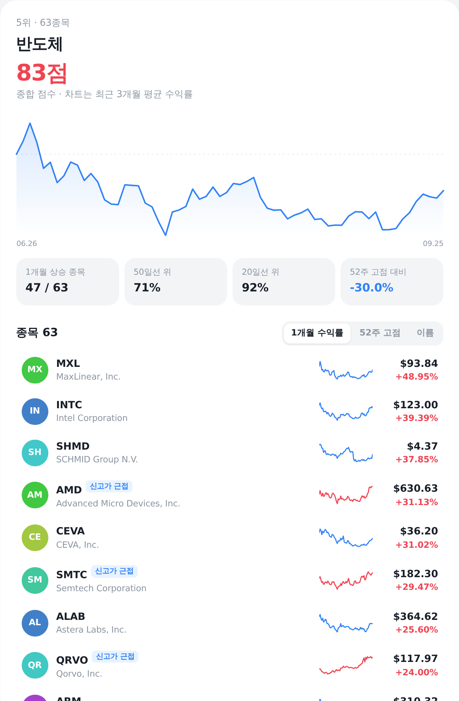
site-14-theme-semis.png
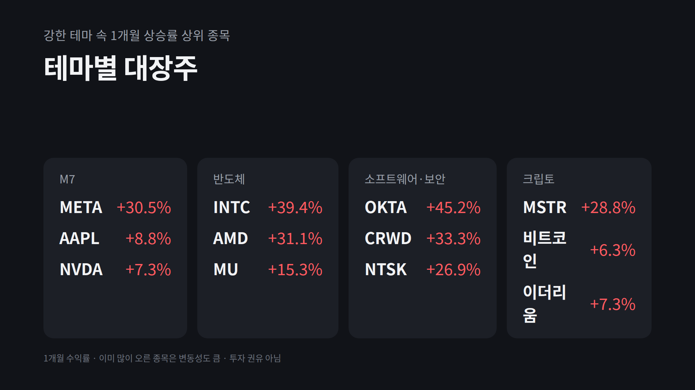
card-09-leaders.png
지수 말고 종목으로 가볼게요.
미국 27개 테마, 698종목을 매일 점수로 매기는 사이트도 만들었어요. / 최근 수익률과 상승 종목 비율로 0점에서 100점까지.
지금 1등은 M7과 스페이스X, 91점. 8종목 중 7개가 한 달간 올랐어요. / 메타가 한 달에 30%, 애플은 신고가 근처입니다.
2등은 크립토, 89점. 비트코인이 3개월에 40% 반등하면서 스트래티지 같은 관련주가 같이 올랐어요. / 다만 비트코인은 아직 1년 전보다 26% 낮습니다.
3등 소프트웨어·보안, 86점. 옥타 45%, 크라우드스트라이크 33%.
그리고 반도체 83점. 63종목 중 47개가 올랐고, 인텔 39%, AMD 31%. / 마이크론은 올해만 279%예요.
반대로 가장 약한 곳은 태양광·신재생 8점, 원자력 13점, 그리고 핀테크, 방산, 배터리. / 원자력은 한 달에 −14%입니다.
정리하면, 돈이 AI 빅테크, 반도체, 소프트웨어로 몰리고 / 신재생·원자력 쪽에서 빠지고 있어요.
그런데 하나 기억하실 게 있어요. / 강한 테마일수록 대부분 성장주고, 성장주는 금리에 가장 약합니다.
아까 QQQ 신호가 '보류'였던 것과 같은 이야기예요. / 들어가더라도 쫓아가지 말고 나눠서.
편집 · card-08 → site-11 테마 지도 → 테마별 상세(site-13, 16, 15, 14)를 말하는 순서대로 컷. 종목명 나올 때 티커 자막(META, MSTR, OKTA, CRWD, INTC, AMD, MU). 한국식 색: 상승 빨강, 하락 파랑 유지. 마지막 문장에서 card-09.